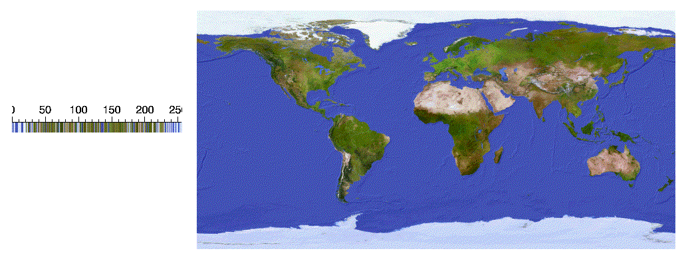
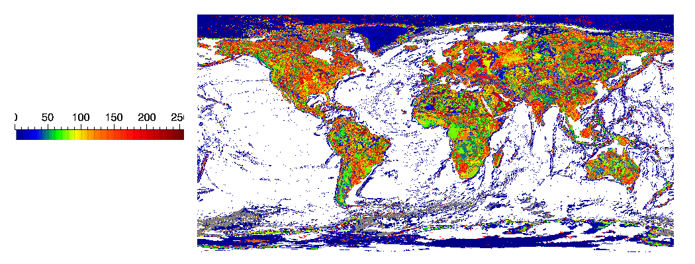
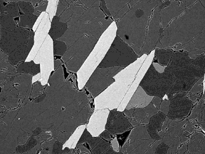
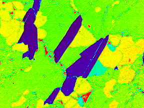

Mineral Image and Derived Color Table (Object Graphics)

A palette object represents a color lookup table that maps indices to red, green, and blue values.
None
See IDLgrPalette::Init .
Objects of this class have the following properties. See IDLgrPalette Properties for details on individual properties.
In addition, objects of this class inherit the properties of all superclasses of this class.
This class has this following methods:
In addition, this class inherits the methods of its superclasses (if any).
This section contains the following examples:
An indexed image contains up to 256 colors, typically defined by a color table associated with the image. The value of each pixel relates to a color within the associated color table. Combinations of the primary colors (red, green, and blue) make up the colors within the color table. Most indexed images are stored as byte and therefore do not require scaling prior to display.
The following example imports an indexed image from the avhrr.png image file. This indexed image is a satellite photograph of the world. Complete the following steps for a detailed description of the process.
Example Code: See displayindexedimage_object. pro in the examples/doc/objects subdirectory of the IDL installation directory for code that duplicates this example. Run the example procedure by entering displayindexedimage at the IDL command prompt or view the file in an IDL Editor window by entering displayindexedimage.pro .
| 1. | Determine the path to the avhrr.png file: |
file = FILEPATH('avhrr.png', $
SUBDIRECTORY = ['examples', 'data'])
| 2. | Use QUERY_IMAGE to query the file to determine image parameters: |
queryStatus = QUERY_IMAGE(file, imageInfo)
| 3. | Output the results of the file query: |
PRINT, 'Query Status = ', queryStatus
HELP, imageInfo, /STRUCTURE
The following text appears in the Output Log:
Query Status = 1
** Structure <141d0b0>, 7 tags, length=36, refs=1:
CHANNELS LONG 1
DIMENSIONS LONG Array[2]
HAS_PALETTE INT 1
IMAGE_INDEX LONG 0
NUM_IMAGES LONG 1
PIXEL_TYPE INT 1
TYPE STRING 'PNG'
| 4. | Set the image size parameter from the query information: |
imageSize = imageInfo.dimensions
The HAS_PALETTE tag has a value of 1. Thus, the image has a palette (color table), which is also contained within the file. The color table is made up of its three primary components (the red component, the green component, and the blue component).
| 5. | Use READ_IMAGE to import the image and its associated color table from the file: |
image = READ_IMAGE(file, red, green, blue)
| 6. | Initialize the display objects: |
oWindow = OBJ_NEW('IDLgrWindow', RETAIN = 2, $
DIMENSIONS = imageSize, TITLE = 'An Indexed Image')
oView = OBJ_NEW('IDLgrView', $
VIEWPLANE_RECT = [0., 0., imageSize])
oModel = OBJ_NEW('IDLgrModel')
| 7. | Initialize the image’s palette object: |
oPalette = OBJ_NEW('IDLgrPalette', red, green, blue)
| 8. | Initialize the image object with the resulting palette object: |
oImage = OBJ_NEW('IDLgrImage', image, $
PALETTE = oPalette)
| 9. | Add the image object to the model, which is added to the view, then display the view in the window: |
oModel -> Add, oImage
oView -> Add, oModel
oWindow -> Draw, oView
| 10. | Use the colorbar object to display the associated color table in another window: |
oCbWindow = OBJ_NEW('IDLgrWindow', RETAIN = 2, $
DIMENSIONS = [256, 48], $
TITLE = 'Original Color Table')
oCbView = OBJ_NEW('IDLgrView', $
VIEWPLANE_RECT = [0., 0., 256., 48.])
oCbModel = OBJ_NEW('IDLgrModel')
oColorbar = OBJ_NEW('IDLgrColorbar', PALETTE = oPalette, $
DIMENSIONS = [256, 16], SHOW_AXIS = 1)
oCbModel -> Add, oColorbar
oCbView -> Add, oCbModel
oCbWindow -> Draw, oCbView
The following figure shows the resulting indexed image and its color table.
|
 |
The data values within the image are indexed to specific colors within the table. You can change the color table associated with this image to show how an indexed image is dependent upon its related color tables.
| 11. | Change the palette (color table) to the EOS B pre-defined color table: |
oPalette -> LoadCT, 27
| 12. | Redisplay the image in another window to show the palette change: |
oWindow = OBJ_NEW('IDLgrWindow', RETAIN = 2, $
DIMENSIONS = imageSize, TITLE = 'An Indexed Image')
oWindow -> Draw, oView
| 13. | Redisplay the colorbar in another window to show the palette change: |
oCbWindow = OBJ_NEW('IDLgrWindow', RETAIN = 2, $
DIMENSIONS = [256, 48], $
TITLE = 'EOS B Color Table')
oCbWindow -> Draw, oCbView
The following figure shows the indexed image with the EOS B color table.
|
 |
| 14. | Clean up the object references. When working with objects always remember to clean up any object references with the OBJ_DESTROY routine. Since the view contains all the other objects, except for the window (which is destroyed by the user), you only need to use OBJ_DESTROY on the view object. |
OBJ_DESTROY, [oView, oCbVeiw, oPalette]
This example shows how to create a color table to highlight image features using Object Graphics. Complete the following steps for a detailed description of the process.
Example Code: See highlightfeatures_object. pro in the examples/doc/objects subdirectory of the IDL installation directory for code that duplicates this example. Run the example procedure by entering highlightfeatures_object at the IDL command prompt or view the file in an IDL Editor window by entering highlightfeatures_object.pro .
| 1. | Determine the path to the mineral.png file: |
mineralFile = FILEPATH('mineral.png', $
SUBDIRECTORY = ['examples', 'data'])
| 2. | Import the image and its associated color table into IDL: |
mineralImage = READ_PNG(mineralFile, red, green, blue)
| 3. | Determine the size of the imported image: |
mineralSize = SIZE(mineralImage, /DIMENSIONS)
| 4. | Initialize objects necessary for a graphics display: |
oWindow = OBJ_NEW('IDLgrWindow', RETAIN = 2, $
DIMENSIONS = [mineralSize[0], mineralSize[1]], $
TITLE = 'mineral.png')
oView = OBJ_NEW('IDLgrView', VIEWPLANE_RECT = [0., 0., $
mineralSize[0], mineralSize[1]])
oModel = OBJ_NEW('IDLgrModel')
| 5. | Initialize a palette object containing the image’s associated color table and apply the palette to the image objects: |
oPalette = OBJ_NEW('IDLgrPalette', red, green, blue)
oImage = OBJ_NEW('IDLgrImage', mineralImage, $
PALETTE = oPalette)
The objects are then added to the view, which is displayed in the window.
| 6. | Add the image to the model, then add the model to the view: |
oModel -> Add, oImage
oView -> Add, oModel
Draw the view in the window:
oWindow -> Draw, oView
This scanning electron microscope image shows mineral deposits in a sample of polished granite and gneiss. The associated color table is a reverse grayscale.
The following figure shows that the associated color table highlights the gneiss very well, but the other features are not very clear. The other features can be defined with IDL’s pre-defined color table, RAINBOW.
|
 |
The palette can easily be modified to show the RAINBOW pre-defined color table in another instance of the window object.
| 7. | Update palette with RAINBOW color table and then display the image with this color table in another instance window of the window object: |
oPalette -> LoadCT, 13
oWindow = OBJ_NEW('IDLgrWindow', RETAIN = 2, $
DIMENSIONS = [mineralSize[0], mineralSize[1]], $
TITLE = 'RAINBOW Color')
oWindow -> Draw, oView
The following figure shows that the yellow, cyan, and red sections are now apparent, but the cracks are no longer visible. Details within the yellow areas and the green background are also difficult to distinguish. These features can be highlighted by designing your own color table.
|
 |
The features within the image are at specific ranges in between 0 and 255. Instead of a progressive color table, specific colors can be defined to be constant over these ranges. Any contrasting colors can be used, but the easiest to derive are the additive and subtractive primary colors used in the previous section.
| 8. | Define colors for a new color table: |
colorLevel = [[0, 0, 0], $ ; black
[255, 0, 0], $ ; red
[255, 255, 0], $ ; yellow
[0, 255, 0], $ ; green
[0, 255, 255], $ ; cyan
[0, 0, 255], $ ; blue
[255, 0, 255], $ ; magenta
[255, 255, 255]] ; white
| 9. | Create a new color table that contains eight levels, including the highest end boundary by first deriving levels for each color in the new color table: |
numberOfLevels = CEIL(!D.TABLE_SIZE/8.)
level = INDGEN(!D.TABLE_SIZE)/numberOfLevels
| 10. | Place each color level into its appropriate range. |
newRed = colorLevel[0, level]
newGreen = colorLevel[1, level]
newBlue = colorLevel[2, level]
| 11. | Include the last color in the last level: |
newRed[!D.TABLE_SIZE - 1] = 255
newGreen[!D.TABLE_SIZE - 1] = 255
newBlue[!D.TABLE_SIZE - 1] = 255
| 12. | Apply the new color table to the palette object: |
oPalette -> SetProperty, RED_VALUES = newRed, $
GREEN_VALUES = newGreen, BLUE_VALUES = newBlue
| 13. | Display the image with this color table in another window: |
oWindow = OBJ_NEW('IDLgrWindow', RETAIN = 2, $
DIMENSIONS = [mineralSize[0], mineralSize[1]], $
TITLE = 'Cube Corner Colors')
oWindow -> Draw, oView
The following figure shows that each image feature is readily distinguishable.
|
|
| 14. | Clean up object references. When working with objects always remember to clean up any object references with the OBJ_DESTROY routine. Since the view contains all the other objects, except for the window (which is destroyed by the user), you only need to use OBJ_DESTROY on the view and the palette object: |
OBJ_DESTROY, [oView, oPalette]
|
5.0 |
Introduced |
|
6.2 |
Added UVALE and NAME properties |